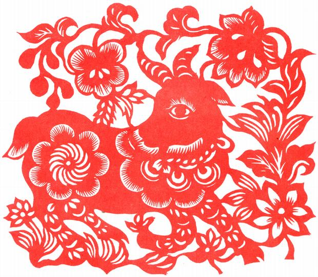

Sheep
The Sheep's Personality:
People born in a year of the Goat are generally believed to be gentle mild-mannered, shy, stable, sympathetic, amicable, and brimming with a strong sense of kindheartedness and justice. They have very delicate thoughts, strong creativity, and perseverance, and acquire professional skills well. Although they look gentle on the surface, they are tough on the inside, always insisting on their own opinions in their minds. They have strong inner resilience and excellent defensive instincts. Though they prefer to be in groups, they do not want to be the center of attention. They are reserved and quiet, most likely because they like spending much time in their thoughts. Goats like to spend money on fashionable things that give them a first class appearance. Although goats enjoy spending money on the finer things in life, they are not snobbish. Find Your Chinese Zodiac Sign Choose your date of birth and find out about your Chinese zodiac sign. Search
The Best Careers for Sheeps
People born in the year of the goat prefer to work in a team. Their best work partners are Horses. They are not crazy about status and power. Unless asked, they won't ever volunteer for anything and act as leaders.
Good career choices for goats are pediatrician, actor, daycare teacher, interior designer, florist, hair stylist, musician, editor, illustrator, and art history teacher.
The Luckiest Things for Sheeps
- Lucky numbers: 2, 7, or numbers containing 2 and 7 (like 27 and 72)
- Lucky days: the 7th and 30th of any month according to the Chinese lunar calendar
- Lucky colors: green, red, and purple
- Lucky flowers: carnations and primroses
- Lucky direction: north


Source: chinahighlights.com